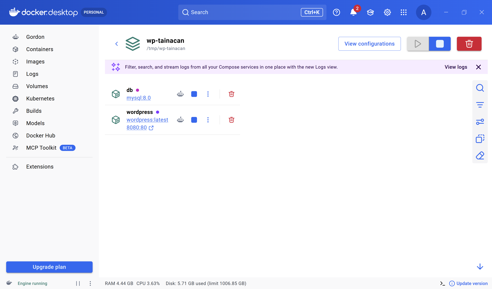
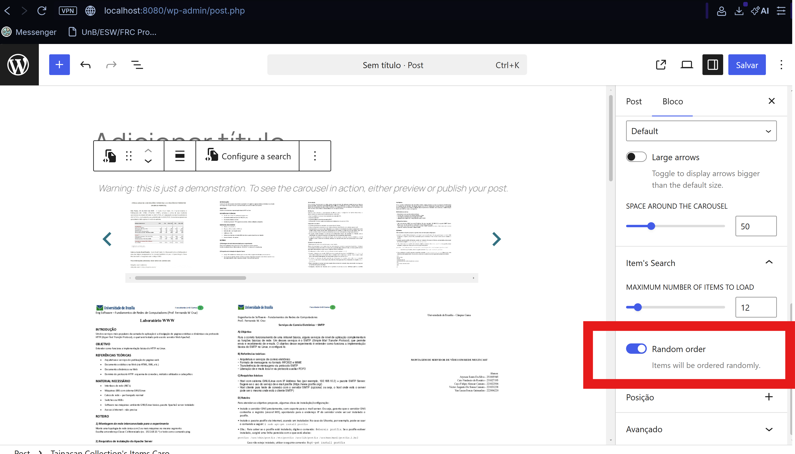
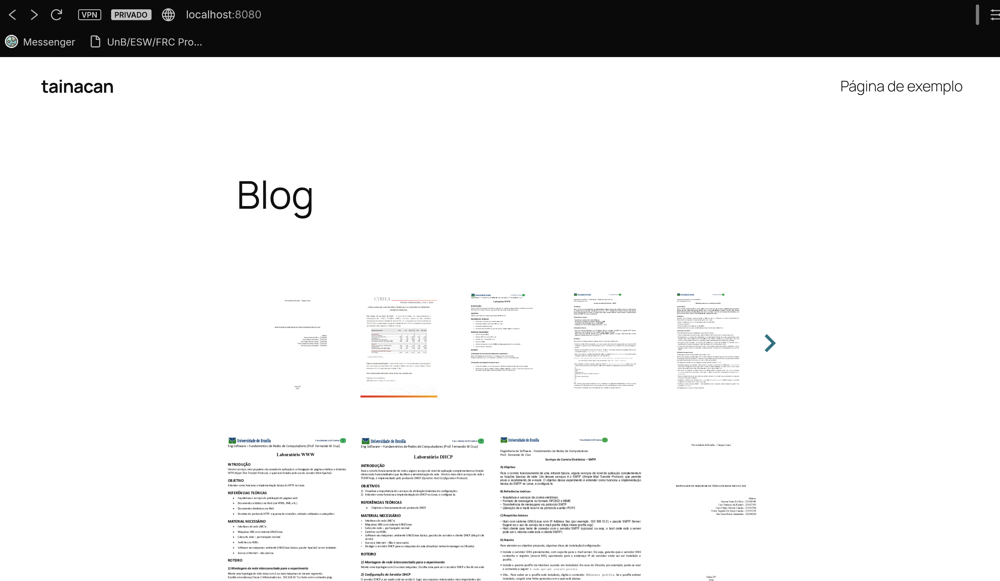
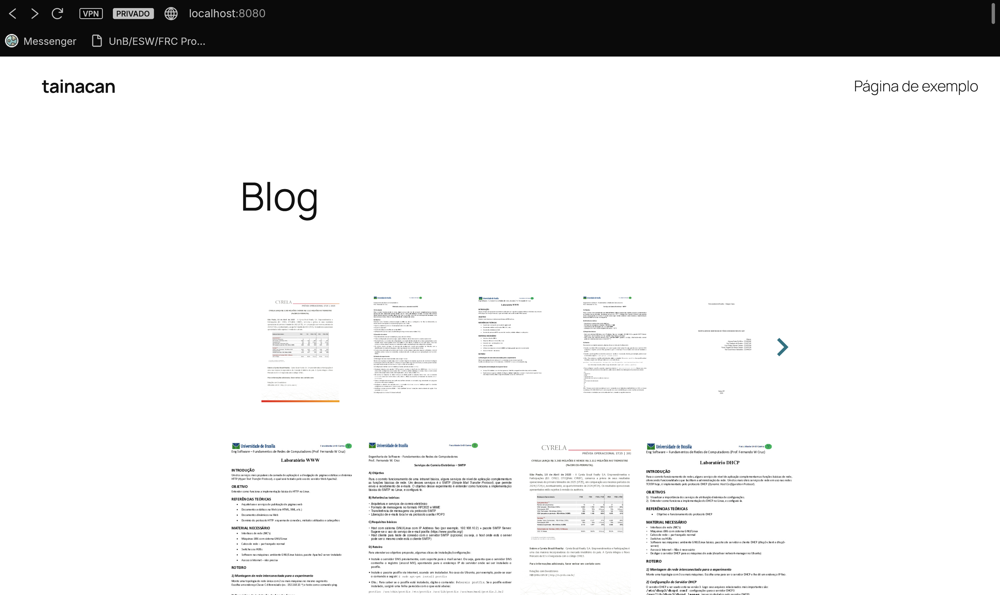
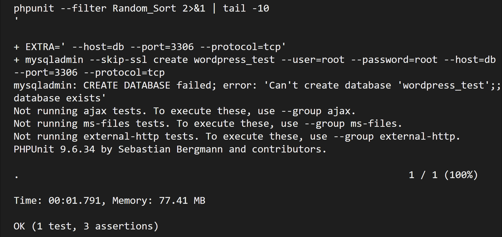

Diário de Bordo – Sprint 5
Informações da Sprint
| Item | Descrição |
|---|---|
| Sprint | Sprint 5 |
| Data de Início | 10/06/2026 |
| Data de Término | 24/06/2026 |
| Responsável | Atyrson Souto |
Objetivo da Sprint
Implementar a funcionalidade da issue #914 – Add random sorting to items list blocks. O objetivo foi permitir que os blocos Dynamic Items List e Carousel Items List exibam os itens em ordem aleatória a cada carregamento, utilizando o parâmetro orderby=rand já suportado pela API REST do Tainacan — mas que até então não era exposto na interface dos blocos.
Planejamento e Atividades da Sprint
O trabalho foi dividido em etapas incrementais, começando pela adição dos atributos de ordenação ausentes no Carousel, passando pela implementação do ToggleControl nos dois blocos, correção de conflito com a searchURL, ajustes no frontend Vue, testes automatizados e abertura da Pull Request.
| Atividade | Status |
|---|---|
| Configurar ambiente Docker com WordPress + Tainacan (build via Webpack) | ✔️ |
Adicionar atributos order, orderBy, orderByMetaKey ao Carousel (block.json, save.js, theme.js) |
✔️ |
Implementar lógica de sorting no setContent() e theme.vue do Carousel |
✔️ |
Adicionar ToggleControl "Random order" nos dois blocos (edit.js) |
✔️ |
Esconder botões de direção (asc/desc) quando orderBy === 'rand' |
✔️ |
Corrigir conflito: searchURL sobrescrevendo orderBy vindo do toggle |
✔️ |
Escrever teste PHPUnit para orderby=rand na API |
✔️ |
| Compilar, validar ponta a ponta e abrir a Pull Request | ✔️ |
Ferramentas e Tecnologias Utilizadas
| Ferramenta / Tecnologia | Finalidade |
|---|---|
| Docker (WordPress + MySQL) | Ambiente local isolado para desenvolvimento |
| WordPress + plugin Tainacan | Plataforma e plugin alvo da contribuição |
| PHP / Composer | Backend do plugin e autoload |
| Node.js / npm / Webpack | Build dos assets JavaScript dos blocos Gutenberg |
| React (wp.element, wp.components) | Componentes do editor Gutenberg (ToggleControl, PanelBody) |
| Vue 3 | Frontend dos blocos (theme.vue) |
| PHPUnit | Testes automatizados da API REST |
| Git / GitHub | Versionamento, fork e Pull Request |
Atividades Realizadas em Detalhes
1. Preparação do ambiente de desenvolvimento
O ambiente foi montado com Docker Compose (WordPress + MySQL 8.0), com a pasta src/ montada como volume dentro do plugin. Foi necessário compilar os assets com npm run build (Webpack 5) a cada alteração nos blocos.

Diferente do ambiente Windows comum, aqui não enfrentamos problemas com rsync ou extensões PHP — o Docker já provê um ambiente Linux completo. O principal desafio foi garantir que o volume bind refletisse corretamente os arquivos compilados.
2. Entendimento técnico da solução
Antes de codar, mapeei como o fluxo de ordenação atravessa as camadas:
block.json→ define os atributos padrão (orderBy: "date");edit.js→ lê e escreve os atributos; osetContent()monta oqueryObjectpara buscar itens;save.js→ serializa os atributos comodata-order-byno markup salvo;theme.js→ lê osdata-*do DOM e passa como props ao Vue;theme.vue→ monta a requisiçãofetchItems()com os parâmetros de ordenação.
A API REST já aceita orderby=rand (definido em class-tainacan-rest-controller.php linha ~422). O gap era exclusivamente no frontend dos blocos.
3. Adição dos atributos de sorting no Carousel Items List
O Dynamic Items List já possuía os atributos order, orderBy e orderByMetaKey no block.json. O Carousel Items List não — então foram adicionados:
block.json:order(string, default""),orderBy(string, default"date"),orderByMetaKey(string, default"");save.js: renderizados comodata-order,data-order-by,data-order-by-meta-key;theme.js: leitura dosdata-*e passagem comopropsao Vue.
Nenhuma depreciação (deprecated) foi necessária — atributos novos com defaults não quebram blocos salvos anteriormente.
4. Implementação do ToggleControl "Random order"
Nos dois blocos, adicionei um ToggleControl no PanelBody de busca, visível apenas quando loadStrategy === 'search':
<ToggleControl
label={__('Random order', 'tainacan')}
checked={ orderBy == 'rand' }
onChange={ ( isChecked ) => {
orderBy = isChecked ? 'rand' : 'date';
setAttributes({ orderBy: orderBy });
setContent();
} }
/>
Quando o toggle está ativo, os botões de ordenação ascendente/descendente são ocultados tanto no editor quanto no frontend (via v-if="orderBy !== 'rand'").

5. Correção do conflito com searchURL
Ao clicar no toggle, o setContent() era chamado, mas a função analisava a searchURL com qs.parse() e extraía o parâmetro orderby da URL da coleção. Esse valor (ex: "date") era então sobrescrito via setAttributes(), revertendo o toggle imediatamente.
Solução: no bloco de ordenação (Set up sorting orderby), adicionei uma verificação antes do parser da URL:
if (orderBy == 'rand') {
queryObject.orderby = 'rand';
if (queryObject.order != undefined && queryObject.order != '')
delete queryObject.order;
} else if (queryObject.orderby != undefined && ...) {
// lógica original
}
Isso garante que, quando orderBy === 'rand', o valor vindo da URL nunca sobrescreve o atributo.
6. Frontend Vue — requisição com orderby=rand
No theme.vue de ambos os blocos:
- O parâmetro
queryObject.orderbyé setado a partir dethis.orderBy(prop recebida dotheme.js); - Quando
orderBy === 'rand', oorderé omitido doqueryObject(direção de ordenação não faz sentido para aleatório); - Os botões de direção (asc/desc) no search bar são condicionalmente renderizados com
v-if="orderBy !== 'rand'".
Isso faz com que cada F5 no frontend dispare uma requisição com orderby=rand, gerando uma ordem diferente a cada carregamento (sem seed, por design).

Figura 1: Frontend exibindo itens em ordem aleatória.

Figura 2: Frontend exibindo itens em ordem aleatória após dar F5 na página.
7. Testes automatizados (PHPUnit)
Criei o arquivo tests/test-random-sort-blocks.php com um teste que:
- Cria uma coleção e 3 itens via factory;
- Faz uma requisição
GET /collection/{id}/items?orderby=rand; - Assere que o status é 200 e que 3 itens são retornados.
$ phpunit --filter Random_Sort
OK (1 test, 3 assertions)

8. Compilação, validação e Pull Request
O build foi compilado com npm run build (Webpack 5.106.0, sucesso). A validação ponta a ponta incluiu:
- Editor: toggle permanece ativo após salvar/recarregar a página;
- Editor: botões asc/desc somem quando o toggle está ativo;
- Editor: itens do preview são recarregados com
orderby=rand; - Frontend: a cada F5 os itens aparecem em ordem diferente;
- Carousel: toggle aparece apenas no modo
search(não noselection).
A branch feature/random-sort-items-list-blocks foi enviada para o fork e a Pull Request foi aberta no repositório oficial com Closes #914.

Aprendizados e Dificuldades
Maiores Dificuldades:
- Depuração do conflito
searchURL × orderBy: o toggle do Carousel parecia funcionar nos logs, mas reverter sozinho. Descobri que osetContent()analisava a URL da coleção e sobrescrevia o atributo. Foi necessário rastrear o fluxo completo (onChange → setAttributes → setContent → qs.parse → setAttributes de volta) para isolar a causa. - Diferença entre os blocos: Dynamic Items List já funcionava com
setContent()direto, mas Carousel apresentava o bug — mesmo padrão de código, comportamentos diferentes, porque asearchURLde cada bloco vinha de coleções diferentes (algumas comorderbyna URL, outras não). - Ambiente de testes PHPUnit: integrar o PHPUnit com o MySQL do Docker exigiu configuração extra (SSL desabilitado, host via rede Docker). Não é algo documentado no projeto.
Aprendizados:
- A arquitetura completa de um bloco Gutenberg no Tainacan:
block.json→edit.js→save.js→theme.js→theme.vue, e como os dados fluem entre editor e frontend. - Como o
qs.parsedosearchURLpode interferir nos atributos do bloco se não for tratado. - A importância de testar o toggle tanto em blocos novos quanto em blocos já salvos — o estado inicial dos atributos pode ser diferente.
- O fluxo de contribuição: fork → branch → commits → push → PR com
Closes #issue.
Próximos Passos
- Aguardar a revisão do mantenedor na Pull Request.
- Se solicitadas alterações, aplicá-las na branch e atualizar a PR.
Histórico de Versões
| Versão | Data | Descrição | Autor |
|---|---|---|---|
1.0 |
17/06/2026 | Criação do Diário de Bordo da Sprint 5 | Atyrson Souto |